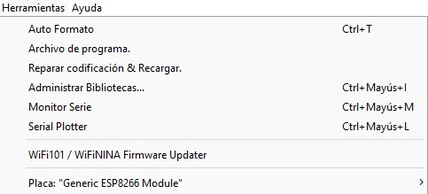
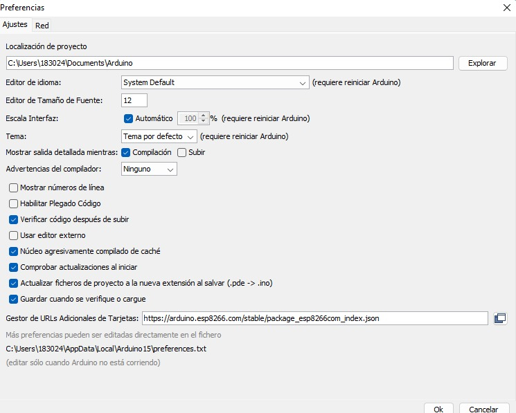
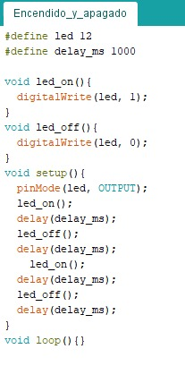
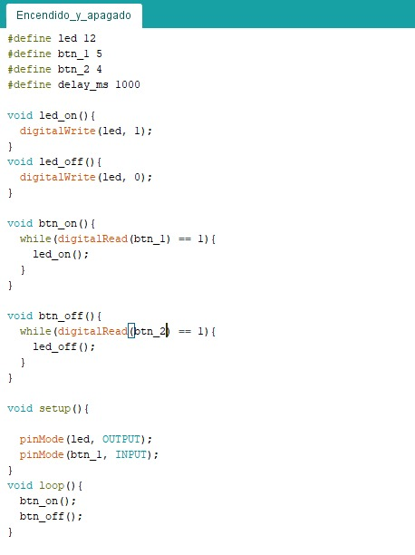
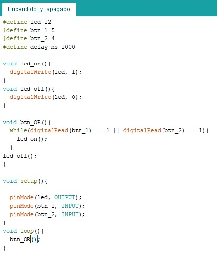
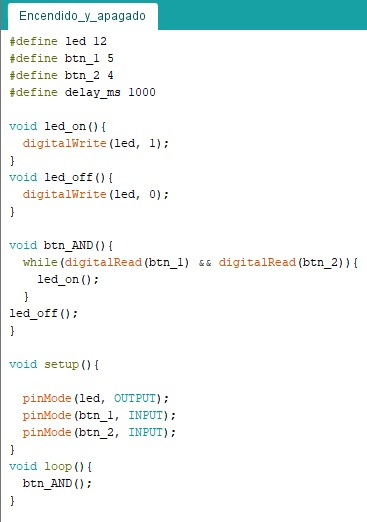
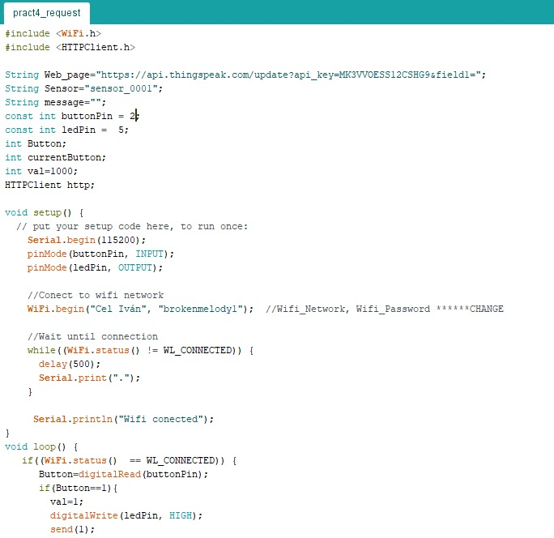
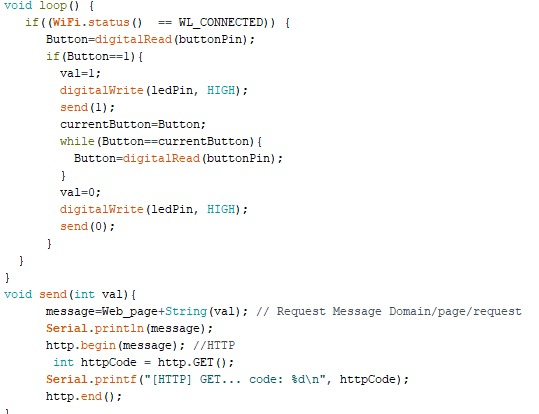

Utilizando la información e instrucciones de la presentación, configurar el IDE de Arduino para poder programar el NodeMCU directamente desde el entorno de Arduino, instalando las herramientas necesarias.


Desarrollar un programa de encendido y apagado de un LED mediante retardos.

Desarrollar un sistema de encendido y apagado de un LED mediante el uso de botones.

Desarrollar un sistema de encendido y apagado de un LED mediante el uso de dos botones y una condicional OR.

Desarrollar un sistema de encendido y apagado de un LED mediante el uso de dos botones y una condicional AND.

Utilizando el ejemplo de Thingspeak, desarrollar un sistema que mediante un botón conectado al NodeMCU enviemos un 1 al apretar el botón y un 0 al soltarlo.


Utilizando un dashboard de ejemplo de PHP, desarrollar un sistema que mediante 3 botones conectados al NodeMCU enviemos un 1 al apretar el botón y un 0 al soltarlo.